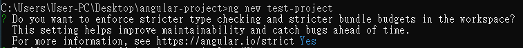
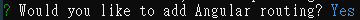
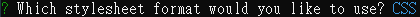
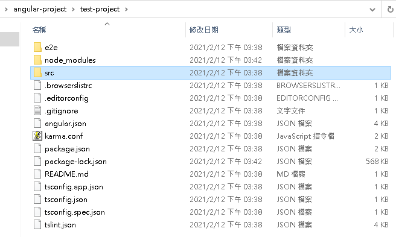
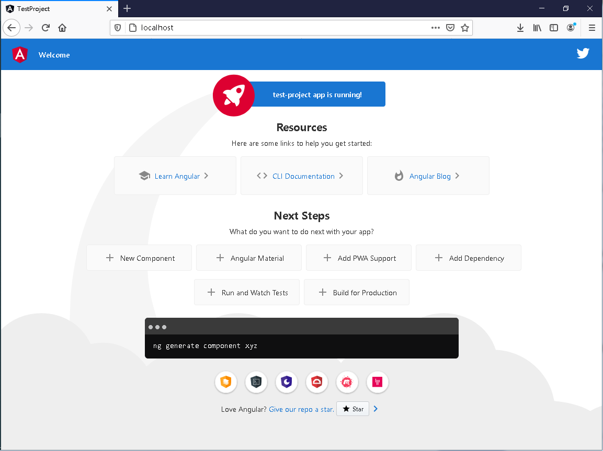

Angular學習筆記2 - 建立第一個 Angular 專案
在了解了 MPA 與 SPA 之後，就要開始建立第一個 Angular 專案了
由於這份紀錄是在我已經學習 Angular 幾天後才開始撰寫的，當時的安裝紀錄並沒有保存，接下來的安裝過程將會使用虛擬機進行。
環境安裝
在建立 angular 專案前，需要先安裝一些東西
Angular CLI
Angular CLI 是 Angular 的 command line 工具，可以快速的建立 Angular 專案與產生相關的模組或元件
在 cmd 打上指令來安裝 Angular CLI
npm install --global @angular/cli |
注意 NodeJS 的版本
某些 NodeJS 的版本在安裝上可能會怪怪的，不確定是不是跟作業系統有關
本機上我是 Win7，使用 NodeJS 12
虛擬機的安裝環境則是 Win10， NodeJS 14
安裝時遇到權限不足的問題，有可能是因為快取資料建在 ProgramFile 裡的緣故。
可以修改一下 npm 的設定，讓快取資料轉存到其他地方 (比如說 ProgramData)
我個人並不是很建議直接使用管理員模式來處理這個問題
若是在安裝時碰到其他問題，也可以考慮其他版本的 NodeJS
如果要快速轉換版本，可以使用 NVM 進行切換
建立 Angular 專案
終於到了今天的重頭戲 Angular 了，透過 Angular CLI 可以建立 Angular 專案
打上指令：
ng new <資料夾名稱> |
一開始會詢問你是否要強制嚴格型別檢查。
打 N 的話會比較輕鬆一點，不會因為少了型別宣告就跳錯，不過我比較習慣有型別的環境，因此這邊我打 Y

接著會詢問你是否要使用路由。如果沒有要自動產生路由檔案的話就回答 N，只後也可以手動增加上去

最後詢問你要使用哪種樣式表格式

最後就是等它把需要的套件全部都安裝到專案資料夾裡，這邊需要一點時間
等待套件建立完之後，就有一個建立好的 Angular 專案了

當建立好的專案可以使用 Angular CLI 來進行一些操作
使用前，記得先 cd 專案資料夾內
預覽
透過 Angular CLI 可以建立一個本地網頁伺服器來預覽 Angular 專案的樣貌。這個伺服器會感應程式碼的變化，當相關的程式有所變化時，會將瀏覽器的畫面重新整理，以方便開發
指令：
ng serve |
預設的 port 號是 4200 ，可以自己透過添加 --port 數字 來指定 port 號
打上指令後，就能透過瀏覽器來查看一下剛建立好的專案了。這邊我是把伺服器建在 80埠

結語
前面會提到 NodeJS 的問題，是因為我在自己的電腦 ( Win7 ) 安裝時碰到了問題，當時是安裝 13 版 (因為 14 版要 Win10 以上)，就遇到了 npm ERR! cb() never called! 的問題
後來去問了比較熟悉 Angular 的同學，才知道 NodeJS 的版本有可能會影響安裝過程，最後去找了 NodeJS 12 來用
成功安裝之後，當然就開始了我的 Angular 之旅啦！
下一篇將會簡單的介紹一下我目前所了解到的一些基本概念
應該會講 Module、Component 還有基本的變數操作
更新
- 2021-02-14
- 修正文章目錄顯示異常的問題